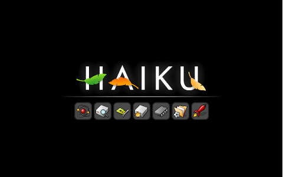

Загрузчик Haiku может помочь вам, когда у вас проблемы с оборудованием или есть необходимость выбрать, какую
инсталяцию Haiku запустить, если их несколько (возможно инсталяция на CD или USB-флешке).
Это также сподручно после установки программного компонента, который не позволяет системе нормально загрузиться, чтобы удалить его.
Оцпия Disable user add-ons описаная ниже запустит Haiku без установленных пользователем компонентов, например, драйвера.
Чтобы войти в Boot Loader options вам необходимо нажать ПРОБЕЛ сразу после начала процесса загрузки. Очень легко упустить момент нажатия, так что зажмите клавишу до появлению меню.
После входа вам предлагается меню:
| Select boot volume | Выбор инсталяции Haiku для запуска. | |
| Select safe mode options | Здесь много различных опции, которые можно попробовать в случае проблем с оборудованием. При перемещении указателя на опцию внизу экрана возникает краткое описание.
- Safe mode | |
| Select fail safe video mode | Если вы выбрали опцию Use fail-safe video mode, вы сможете выбрать разрешение экрана и глубину цвета |
После выбора одной или более опций, вы возвращаетесь в главное меню и продолжаете загрузку, которая преветствует вас такой заставкой:
Если всё в порядке, один за другим быстро загараются символы.